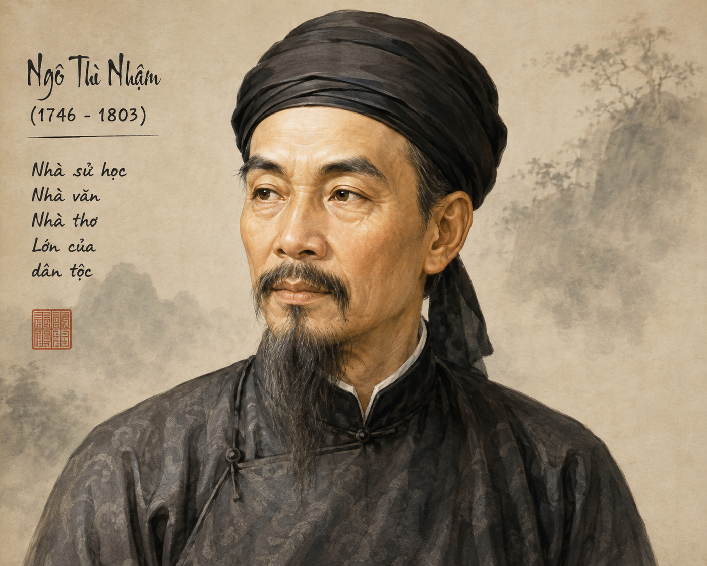
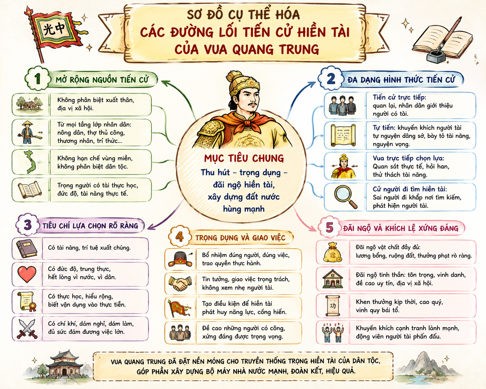

— Ngô Thì Nhậm —
Để tăng sức thuyết phục cho văn bản nghị luận, ngoài lí lẽ và bằng chứng, người viết còn có thể sử dụng một số yếu tố bổ trợ như: thuyết minh, miêu tả, tự sự, biểu cảm,...
1. Có không ít câu chuyện thú vị về việc vua chúa hay lãnh đạo đất nước muốn chiêu mộ hiền tài ra gánh vác trọng trách quốc gia. Hãy chia sẻ một câu chuyện mà bạn biết.
2. Trong công cuộc xây dựng đất nước, việc trọng dụng người tài có ý nghĩa như thế nào?
Gợi ý câu 1: Câu chuyện Lưu Bị "tam cố thảo lư" (ba lần đến lều cỏ) để mời Gia Cát Lượng ra giúp sức; hoặc vua Lê Thái Tổ trân trọng Nguyễn Trãi; Vua Quang Trung nhiều lần viết thư cầu hiền chiêu mộ các sĩ phu Bắc Hà như Ngô Thì Nhậm, Nguyễn Thiếp.
Gợi ý câu 2: Người tài là "hiền tài là nguyên khí quốc gia". Trọng dụng người tài giúp đất nước có những chính sách sáng suốt, phát triển kinh tế - xã hội, giữ vững độc lập chủ quyền và xây dựng nền văn minh bền vững.
• Hiệu là Hy Doãn, người làng Tả Thanh Oai (làng Tó), huyện Thanh Oai, trấn Sơn Nam (nay thuộc huyện Thanh Trì, TP. Hà Nội).
• Năm 1775 đỗ Tiến sĩ, từng giữ chức Đốc đồng trấn Kinh Bắc thời Lê - Trịnh.
• Năm 1788, ông theo phong trào Tây Sơn, được vua Quang Trung phong làm Lại bộ Tả thị lang, sau thăng Binh bộ Thượng thư.
• Là người có công lớn đối với triều đại Tây Sơn: thu phục cựu thần nhà Lê, giúp vua Quang Trung đại phá quân Thanh, phụ trách ngoại giao với nhà Thanh và soạn thảo nhiều văn kiện quan trọng.

Hình 1: Tác giả Ngô Thì Nhậm• Hoàn cảnh sáng tác: Viết vào khoảng năm 1788 – 1789. Sau khi thành lập triều đại mới, sĩ phu Bắc Hà (trí thức triều Lê - Trịnh cũ) chưa ủng hộ, thậm chí né tránh, bất hợp tác. Vua Quang Trung giao cho Ngô Thì Nhậm thay mình viết bài chiếu để thuyết phục họ ra cộng tác xây dựng đất nước.
• Thể loại: Chiếu (văn bản hành chính cổ do vua ban bố nhằm công bố chính sách, kêu gọi thần dân).
• Bố cục: 4 phần tương ứng với các chặng lập luận logic chặt chẽ.
Khi đọc văn bản nghị luận trung đại (như thể Chiếu), cần chú ý đến bối cảnh lịch sử, đối tượng thuyết phục, cùng sự kết hợp hài hòa giữa lí lẽ sắc bén và tình cảm chân thành của người viết.
📌 Quy luật ứng xử của người hiền đối với thiên tử:
"Người hiền xuất hiện ở đời thì như ngôi sao sáng trên trời cao. Sao sáng ắt chầu về ngôi Bắc Thần, người hiền ắt làm sứ giả cho thiên tử."
→ So sánh người hiền với "sao sáng", thiên tử với "ngôi Bắc Thần". Việc người tài ra giúp vua là hợp quy luật tự nhiên và ý trời.
❓ [Câu hỏi trong bài]: Phần 1 nêu vấn đề gì?
"Ngày đêm mong mỏi... Hay trẫm ít đức không đáng để phò tá chăng? Hay đang thời đổ nát chưa thể ra phụng sự vương hầu chăng?"
→ Thái độ khiêm nhường, thành tâm, gạt bỏ khoảng cách đế vương để đối thoại chân thành.
❓ [Dự đoán]: Việc nêu thực trạng “trốn tránh việc đời” của kẻ sĩ dẫn đến ý gì sẽ được trình bày ở phần 3?
Lí lẽ sắc bén về hoàn cảnh đất nước:
"Buổi đầu của nền đại định, công việc vừa mới mở ra... Kỉ cương triều chính còn nhiều khiếm khuyết, ngoài biên đương phải lo toan... Một cái cột không thể đỡ nổi một căn nhà lớn..."
❓ [Nhận xét]: Nhận xét về lí lẽ được sử dụng trong phần 3?
Bảng tổng hợp các đường lối, cách thức chiêu mộ hiền tài:
| STT | Đối tượng | Cách thức tiến cử / Thực thi | Chính sách khoan hòa |
|---|---|---|---|
| 1 | Các bậc quan viên & thứ dân | Cho phép dâng sớ tâu bày sự việc, mưu hay. | Lời đúng thì cất nhắc, lời sai thì gác lại, không bắt tội. |
| 2 | Người có nghề hay nghiệp giỏi | Quan văn, quan võ tiến cử, dẫn vào ra mắt. | Tùy tài năng mà tiến dùng (tùy tài lục dụng). |
| 3 | Người tài bị che kín | Cho phép tự dâng sớ tự tiến cử. | Không bị coi là cầu danh mưu lợi. |

Hình 2: Sơ đồ cụ thể hóa các đường lối tiến cử hiền tài❓ [Mối liên hệ]: Giữa lí lẽ ở các phần trước với kế hoạch ở phần 4 có mối liên hệ thế nào?
❓ [Ý nghĩa]: Ý nghĩa của lời khuyến dụ ở cuối chiếu?
Ngô Thì Nhậm không chỉ là một nhà chính trị, ngoại giao lỗi lạc mà còn là một nhà văn, nhà thơ tài hoa với di sản đồ sộ. Dù phục vụ cho triều đại Tây Sơn ngắn ngủi nhưng những tác phẩm ngoại giao và nghị luận của ông đã góp phần rất lớn bảo vệ nền độc lập dân tộc trước nhà Thanh.
Vận dụng tri thức về yếu tố bổ trợ (thuyết minh, biểu cảm, tự sự) vào viết bài văn nghị luận xã hội hoặc nghị luận văn học để tăng sức lôi cuốn và thuyết phục người đọc.
Trả lời 10 câu hỏi để chinh phục đỉnh cao tri thức về bài học!
Phân tích tính chặt chẽ trong hệ thống lập luận của văn bản "Cầu hiền chiếu" từ việc đặt vấn đề, phân tích thực trạng đến giải pháp.
Lời giải chi tiết:
1. Đặt vấn đề (Phần 1): Nêu quy luật khách quan "người hiền làm sứ giả cho thiên tử". Lập luận dựa trên tư tưởng thiên mệnh, định hướng tính chính nghĩa.
2. Thực trạng (Phần 2): Thẳng thắn nêu việc sĩ phu trốn tránh, tự vấn trách nhiệm bản thân để tạo sự thấu hiểu, giải tỏa e ngại.
3. Nhu cầu thực tiễn (Phần 3): Nêu bối cảnh đất nước mới định, nhiều khó khăn, khẳng định vai trò không thể thiếu của hiền tài ("một cột không đỡ nổi nhà lớn").
4. Giải pháp & Khuyến dụ (Phần 4): Đưa ra 3 con đường tiến cử cụ thể, chính sách bao dung không bắt tội lời sai, mở ra cánh cửa hân hoan hợp tác.
Chỉ ra và nêu tác dụng của 02 yếu tố biểu cảm và 01 yếu tố thuyết minh xuất hiện trong bài chiếu.
Lời giải chi tiết:
• Yếu tố thuyết minh: Đoạn cung cấp thông tin về bối cảnh "người học rộng tài cao chưa thấy tìm đến", "kỉ cương triều chính còn nhiều khiếm khuyết" -> Tác dụng: Giúp người đọc nắm rõ thực trạng khách quan đất nước.
• Yếu tố biểu cảm 1: Lời cảm thán tự vấn "Hay trẫm ít đức không đáng để phò tá chăng?" -> Tác dụng: Bộc lộ sự nhún nhường, chân thành tha thiết.
• Yếu tố biểu cảm 2: "Trẫm nơm nớp lo lắng, ngày một ngày hai vạn việc nảy sinh" -> Tác dụng: Thể hiện tinh thần trách nhiệm cao độ và sự sốt sắng vì dân vì nước.
Viết đoạn văn (khoảng 150 chữ) nêu suy nghĩ của bạn về quan điểm: "Người có tài cần phát huy tài năng của mình để đóng góp cho sự nghiệp chung".
Lời giải tham khảo (Khoảng 150 chữ):
"Hiền tài là nguyên khí của quốc gia", do đó việc người có tài chủ động phát huy năng lực để cống hiến cho cộng đồng là tinh thần trách nhiệm lớn lao. Tài năng không chỉ là thành quả cá nhân mà còn là giá trị được nuôi dưỡng từ gia đình và xã hội. Khi người tài dấn thân, sáng tạo trong các lĩnh vực kinh tế, khoa học, văn hóa, họ tạo ra sức mạnh thúc đẩy sự phát triển chung của đất nước. Ngược lại, nếu giấu tài hay thờ ơ trước thời cuộc, đó là sự lãng phí tri thức và thiếu tinh thần công dân. Trong thời đại hội nhập hiện nay, mỗi cá nhân cần không ngừng rèn luyện đức - tài, sẵn sàng đóng góp sức mình vì một Việt Nam phồn vinh và phát triển."